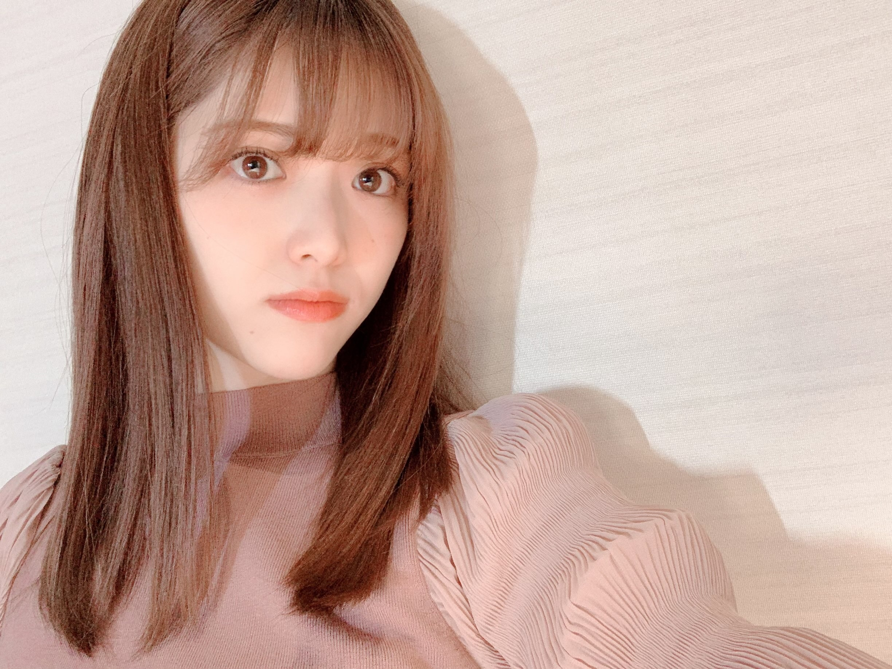

2021/0318Thu雨の塔っ(o・・o)
松村沙友理です
３月19日〜21日まで
新国立劇場 小劇場にて
少女文學演劇「雨の塔」
三島敦子役で出演します。
女の子四人しか出演しない
女の子同士の繊細な物語です。
黒髪ぱっつんロングの三島敦子がいます...
この作品については
原作を読んでもらったり
舞台を観てもらうのが一番いいのかなと思うくらい
私の拙い言葉では表現しきれない
色々と入り組んでいるというか
本当に簡単には説明できない奥が深い作品です！
その奥深さを表現できるかも不安ですが
私自身 大好きな世界観なので
丁寧に伝えられたらいいなと思います！！
この作品からたくさんのことを感じて頂けたら嬉しいです！
今回二つのバージョンに分かれていて
一つの原作が それぞれの女の子たちに合わせて
二つにわかれているので
両バージョンみてもらった方が絶対にいいです...
私は三島敦子役なので
三島・都岡ver.おすすめ！っていうと思われるでしょうが
矢咲・小津ver.も良すぎて
本当にどっちも観てもらいたい気持ちです...本当に...
この舞台
音楽劇なのかなと思うくらい音楽も凄くよくて
それぞれの女の子達に当て書きで曲を作ってもらっています。
その歌が本当によくて
藤本結衣ちゃん七木奏音ちゃん高月彩良ちゃん
めっちゃいいです...。
はぁ、語彙力！！
都岡の歌も小津の歌も矢咲の歌も
全部全部いいです。
舞台にあがると 終演まではステージから
出られないので
脇にいるのですが
いつも泣いてしまいます。
何度感じても何度でも感じたくなって
もうこの舞台のとりこです...。
本当に素敵な作品に出会えて良かった
なので 頑張ります。
自分には足りない所がたくさんありますが
来ていただく、観ていただく皆様に
楽しんでもらえる様に
全６公演
全てでLIVE配信があります。
終演後のキャストの
楽屋生コメントもあります。
本番終えた後
何を思って何を話したくなるのか
まだ全然わからないけど
楽しみです...！！
詳しくはこちらへ↑
最近、自分の気持ちを伝えるのが
余計に下手になっちゃって
日本語を上手く操れなくて困っています...
でも、舞台 雨の塔はみてくださいねっ♡

2021/03/18 14:24
コメント(597)
さゆりん、おはようございます
今日も、がんばってね
イマドキッ聴いたよ、さゆりんの
話し方可愛い声が、好きなので
もっと聞いて、いたいよ
生ドル見るね、楽しみだよ
インスタ更新ありがとうね
さゆりんの、活躍で、元気もらっているよ
沢山の楽しみを、ありがとうね
身体に気をつけて、お仕事してね
またね大好き過ぎる❤️❤️❤️さゆりん頑張れ
可愛い可愛い可愛いよ
今日も、がんばってね
イマドキッ聴いたよ、さゆりんの
話し方可愛い声が、好きなので
もっと聞いて、いたいよ
生ドル見るね、楽しみだよ
インスタ更新ありがとうね
さゆりんの、活躍で、元気もらっているよ
沢山の楽しみを、ありがとうね
身体に気をつけて、お仕事してね
またね大好き過ぎる❤️❤️❤️さゆりん頑張れ
可愛い可愛い可愛いよ
まっちゅん こんちはー(^o^)／
「雨の塔」の実際の観劇は、3/20(土)の三島・都岡verだけだったんで、原作買って、アーカイブ配信は矢咲・小津verも観たよ。そしたら、想像してた部分が補われたりして、またその世界にちょっと深く浸れたよ(^^)d
そして、一昨日は１期生ライブお疲れ様～ まっちゅんは終始可愛いかったし、インド映画の世界はじめ楽しかったし、１期生の絆もあらためて感じて、感動的だったよ(^o^)v
まっちゅんは終始可愛いかったし、インド映画の世界はじめ楽しかったし、１期生の絆もあらためて感じて、感動的だったよ(^o^)v
舞台とライブの準備が重なってたから、大変だったね。お疲れ様～！ 素敵な舞台とライブありがとー(*^。^*)
じゃあね(^-^)/
「雨の塔」の実際の観劇は、3/20(土)の三島・都岡verだけだったんで、原作買って、アーカイブ配信は矢咲・小津verも観たよ。そしたら、想像してた部分が補われたりして、またその世界にちょっと深く浸れたよ(^^)d
そして、一昨日は１期生ライブお疲れ様～
舞台とライブの準備が重なってたから、大変だったね。お疲れ様～！ 素敵な舞台とライブありがとー(*^。^*)
じゃあね(^-^)/
今日の生ドルも頑張れ〜！
こんばんまっちゅん！！！
しご終わしました！！
生ドルめちゃくちゃ楽しみ«٩(*´ ꒳ `*)۶»ﾜｸﾜｸ
21時から～～♪♪♪
絶対みるね〜～！！
もう夜ですが……
今日も一日宇宙で一番可愛いまちゅの笑顔満開の日でありますように！！！(⑉• •⑉)❤︎
ではでは、また感想書きますね！！
たっかんより
りんご姫とまゆたん、今月も可愛くて楽しい生ドルの配信お疲れ様でした
来月の配信も楽しみに待機してますね！
来月の配信も楽しみに待機してますね！
沙友理ちゃん
こんばんは
シブヤノオト生放送お疲れ様でした
帰り道は遠回りしたくなる
落ちサビの辺りで沙友理ちゃんが笑ってるのなんだったんだろ
気になりました
後ろの方で楽しそうにしてるの気になるけどなんか良いですよね
のぎおびもお疲れ様でした
星野みなみちゃんのとかわいいコンビ最高でしたね
モノマネも上手かったです
まさか自分を引いて自分のモノマネするとは
今の黒髪もとてもかわいい
三島だーってなります
今週ものすごく雨の塔ロスです
昨日は19日の2公演アーカイブ観ました
最終日観た後に観るとやっぱり初日は硬かったですね
次は20日のアーカイブ観ます
ちょっと前になりましたけど松村沙友理のシャーマンキング勉強中も観ました
マイケルジャクソンの憑依合体むちゃぶりでしたけどがんばりましたね涙
シャーマンキングも観ます
明日はpremium musicですね
生放送続きますけどがんばりまっちゅん
おやすみなさい
こんばんは
シブヤノオト生放送お疲れ様でした
帰り道は遠回りしたくなる
落ちサビの辺りで沙友理ちゃんが笑ってるのなんだったんだろ
気になりました
後ろの方で楽しそうにしてるの気になるけどなんか良いですよね
のぎおびもお疲れ様でした
星野みなみちゃんのとかわいいコンビ最高でしたね
モノマネも上手かったです
まさか自分を引いて自分のモノマネするとは
今の黒髪もとてもかわいい
三島だーってなります
今週ものすごく雨の塔ロスです
昨日は19日の2公演アーカイブ観ました
最終日観た後に観るとやっぱり初日は硬かったですね
次は20日のアーカイブ観ます
ちょっと前になりましたけど松村沙友理のシャーマンキング勉強中も観ました
マイケルジャクソンの憑依合体むちゃぶりでしたけどがんばりましたね涙
シャーマンキングも観ます
明日はpremium musicですね
生放送続きますけどがんばりまっちゅん
おやすみなさい
沙友理ちゃん
こんばんは
生ドルお疲れ様でした
今日はババババンビさんゲストでしたけど最近は乃木坂に憧れてアイドルになった子がゲストさんなの多いですね
沙友理ちゃんを観て白米を食べる様になった子が居るって凄いですね
さすがインフルエンサー
影響与えてますね
まゆたんの握手会勉強の剥がしが楽しんじゃってるの面白いです
剥がしもかわいいってのも本当ですね
今日は沙友理ちゃんが楽しそうで良かったです
スタジオに戻ってきたのも良かったですね
1期生ライブの話で雨の塔やりながらインドのこと考えてたって凄い
4期生にインドやらせたいっても凄いパワーワード
まゆたんが雨の塔や釣り堀を褒めてましたね
まゆたん良い後輩
沙友理ちゃんも4期生のCDTV観て褒めてましたし良い先輩
おやすみなさい
こんばんは
生ドルお疲れ様でした
今日はババババンビさんゲストでしたけど最近は乃木坂に憧れてアイドルになった子がゲストさんなの多いですね
沙友理ちゃんを観て白米を食べる様になった子が居るって凄いですね
さすがインフルエンサー
影響与えてますね
まゆたんの握手会勉強の剥がしが楽しんじゃってるの面白いです
剥がしもかわいいってのも本当ですね
今日は沙友理ちゃんが楽しそうで良かったです
スタジオに戻ってきたのも良かったですね
1期生ライブの話で雨の塔やりながらインドのこと考えてたって凄い
4期生にインドやらせたいっても凄いパワーワード
まゆたんが雨の塔や釣り堀を褒めてましたね
まゆたん良い後輩
沙友理ちゃんも4期生のCDTV観て褒めてましたし良い先輩
おやすみなさい
こんばんは
りんご生活
まさか、最近はインド生活だったとはw
さすが１日にナンを100枚食べる女性！
そういえば、ボーダーでの昭和なボックスはまっちゅんのアイデアです？
なんだか、懐かしさに似た郷愁がw
いつも楽しい時間をありがとうございます
大縄特訓に向けて、じっくり充電してくださいね
いつも見守ってます！
りんご生活
まさか、最近はインド生活だったとはw
さすが１日にナンを100枚食べる女性！
そういえば、ボーダーでの昭和なボックスはまっちゅんのアイデアです？
なんだか、懐かしさに似た郷愁がw
いつも楽しい時間をありがとうございます
大縄特訓に向けて、じっくり充電してくださいね
いつも見守ってます！
おはようございます
ここ最近は2期生ライブ、1期生ライブ
CDTVライブライブとライブ三昧でした
２期生ライブはパフォーマンスが
素晴らしかったですね
歌、ダンス、表現力はピカイチでした
何せ一年越しの待ちに待った
ライブでしたからね
そして卒業する未央奈ちゃんが
儚くて、力強くて、美しくて...
素敵なライブをありがとう
そして未央奈ちゃん卒業おめでとう
１期生ライブは面白い試みで
みていて凄く楽しかったです
相当計画に手間と時間がかかったのでは？
僕らを楽しませるためにいろいろと
考えてくれてありがとう
メンバープロデュース企画は
メンバーならではの視点で
魅力をうまく引き出せていましたよ
CDTVライブライブでは
４期生16人での
生き生きとしたOut of the blueの
パフォーマンスに元気を貰いました
また、サヨナラの意味の歌唱は
4番目の光の撮影場所での披露であり
懐かしさとメロディも相まって
哀愁を感じました
とてもいい演出でしたよ
あれ？３期生は？
いやいや、
３期生ライブの開催日が決定しましたね
３期生単独でのライブは久しぶりなので
凄く楽しみです
今や乃木坂の顔と言っても過言ではない
３期生のライブに心躍ります
ワクワク
そして４期生ライブの開催日も
決定しましたね
今自分たちにできる
精一杯のパフォーマンスを
期待しています
是非とも成長した姿をみせてくださいね
と、つらつらと書いてきましたが
皆さん外仕事や個人の仕事もあるなかでの
ライブ開催は本当に大変だと思います
大変ではありますが
ライブを披露して
今の世の中を少しでも
明るくしたい
元気を届けたいという想い
しっかり伝わっております
ありがとうございます
ただただ感謝です
勿論、バラエティ、ドラマ、舞台
ラジオ、雑誌といった個人の
お仕事も楽しみにしています
我々ファンがお返しに
出来ることといえば
応援することだけですが
どうか頑張ってくださいね
最後まで読んでいただいて
ありがとうございます
ここ最近は2期生ライブ、1期生ライブ
CDTVライブライブとライブ三昧でした
２期生ライブはパフォーマンスが
素晴らしかったですね
歌、ダンス、表現力はピカイチでした
何せ一年越しの待ちに待った
ライブでしたからね
そして卒業する未央奈ちゃんが
儚くて、力強くて、美しくて...
素敵なライブをありがとう
そして未央奈ちゃん卒業おめでとう
１期生ライブは面白い試みで
みていて凄く楽しかったです
相当計画に手間と時間がかかったのでは？
僕らを楽しませるためにいろいろと
考えてくれてありがとう
メンバープロデュース企画は
メンバーならではの視点で
魅力をうまく引き出せていましたよ
CDTVライブライブでは
４期生16人での
生き生きとしたOut of the blueの
パフォーマンスに元気を貰いました
また、サヨナラの意味の歌唱は
4番目の光の撮影場所での披露であり
懐かしさとメロディも相まって
哀愁を感じました
とてもいい演出でしたよ
あれ？３期生は？
いやいや、
３期生ライブの開催日が決定しましたね
３期生単独でのライブは久しぶりなので
凄く楽しみです
今や乃木坂の顔と言っても過言ではない
３期生のライブに心躍ります
ワクワク
そして４期生ライブの開催日も
決定しましたね
今自分たちにできる
精一杯のパフォーマンスを
期待しています
是非とも成長した姿をみせてくださいね
と、つらつらと書いてきましたが
皆さん外仕事や個人の仕事もあるなかでの
ライブ開催は本当に大変だと思います
大変ではありますが
ライブを披露して
今の世の中を少しでも
明るくしたい
元気を届けたいという想い
しっかり伝わっております
ありがとうございます
ただただ感謝です
勿論、バラエティ、ドラマ、舞台
ラジオ、雑誌といった個人の
お仕事も楽しみにしています
我々ファンがお返しに
出来ることといえば
応援することだけですが
どうか頑張ってくださいね
最後まで読んでいただいて
ありがとうございます
さゆりん、おはようございます
今日も、がんばってね
生ドル見たよ、田村さんが、雨の塔
見てくれて、よかったね
ライブの、釣り堀も、見てくれて
ほめて、くれてよかったね
さゆりんを見て、白米食べるように
なったり、凄いね、さゆりん嬉しいね
さゆりん、可愛いかったよ
スタジオからだったね、来月も、楽しみだよ
インスタ更新ありがとうね、可愛い
さゆりんの、活躍で、元気もらっているよ
沢山の楽しみを、ありがとうね
身体に気をつけてお仕事、してね
またね大好き過ぎる❤️❤️❤️さゆりん頑張れ
可愛い可愛いよ
今日も、がんばってね
生ドル見たよ、田村さんが、雨の塔
見てくれて、よかったね
ライブの、釣り堀も、見てくれて
ほめて、くれてよかったね
さゆりんを見て、白米食べるように
なったり、凄いね、さゆりん嬉しいね
さゆりん、可愛いかったよ
スタジオからだったね、来月も、楽しみだよ
インスタ更新ありがとうね、可愛い
さゆりんの、活躍で、元気もらっているよ
沢山の楽しみを、ありがとうね
身体に気をつけてお仕事、してね
またね大好き過ぎる❤️❤️❤️さゆりん頑張れ
可愛い可愛いよ
おはようございまっちゅん！！
昨日は生ドルお疲れ様でした！！！
めちゃくちゃ面白かったよ〜«٩(*´ ꒳ `*)۶»
ゲストはババババンビさんでしたね！！
最近のアイドルさんはやはり乃木坂に憧れてアイドルになった子が多いですね！！
まちゅが白米を食べる姿をみて、白米が好きになったって凄いよねー。
さすがインフルエンサーです(*ฅ́˘ฅ̀*)♡
あっ、海苔バターも本当に美味しかったですよ。
乃木中のお取り寄せ紹介回もほんま楽しみですよ！！
みおちさんの、ハダサマの衣装そっくりだったね……
本人か分からないけど、あの衣装を着た人ライブか握手会会場で見たことあるのよねー(笑)
分からないものだねぇ……
待機列で目の前に並んでた女の子が1年後にはアイドルになって推しと共演してる！なんてこともきっとあるんだろうなぁ……
なんて改めて思いましたよ。
まゆたんの握手会勉強の剥がしが楽しんじゃってるの面白いかったなー(笑)
剥がしがかわいいってのもホンマやね(笑)
今日もまちゅが楽しそうで笑顔が見れて幸せでした(*ฅ́˘ฅ̀*)♡
久々にスタジオに戻ってこれたのも良かったですね！！
ってか……
1期生ライブの話のなかで……
雨の塔やりながらインドのこと考えてたって凄いね(笑)
4期生にインドやらせたいっても凄い面白かった。
まぁでも……
3期生、4期生どちらのライブも、１箇所松村沙友理プロデュース企画があるといいなって思ったよ。
雨の塔や釣り堀もインドも本当に最高でしたよ！！！
映画『賭ケグルイ』も本当に楽しみです！！(((o(*ﾟ▽ﾟ*)o)))
今日はエイプリルフールですね。
今年もウソみたいなほんと話がたくさんあって、とても嘘をつける雰囲気じゃなさそうですね(笑)
まちゅの黒髪すごくサラサラで本当に綺麗です。
あまり明るくしないでいてくれてるのありがたいです。
今日もお互いお仕事
頑張り〜まっちゅん！！٩( *˙0˙*)۶
で行きましょう。
今日も宇宙で一番可愛いまちゅの映画満開の一日でありますように！！！(⑉• •⑉)❤︎
また気が向いた時に……
1期生ライブや、インドの裏話などを綴ったブログを更新してくれると嬉しいです♪♪
ではでは、またね！！
たっかんより
おはようございます(*´ｰ｀)ゞ
モバメありがとう
生ドルお疲れさまでした
久しぶりのスタジオからでしたね
ゲストの#ババババンビさんの可愛らしさに
沸いているさゆりんの姿が
とても可愛かったです
水湊みおちゃん
歌衣装を着てライブに行ってたなんで
見事なまでの乃木坂46ファンでしたね
自己紹介のときのポーズ
良いの考えてあげたね
小鳥遊るいちゃんの白米嫌いを克服した話
嬉しいですね
さゆりんの幸せそうに食べている姿は
影響力がありますよ
お願いした「沙友理ちゃんおかえり」
癒されて良かったね
#ババババンビさん次のゲストのときは
直接会えるといいですね
エンディングトーク
真佑ちゃん
雨の塔に1期生ライブと観ててくれて
嬉しかったですね
舞台中にインドのことが
頭の中に浮かんで演出を考えてた話には
笑っちゃいました 笑
そんな中しっかり役を演じてて
さゆりん凄いね
今回もとても楽しい配信でした
それではまたね
さゆりんp(´▽`o)ﾉﾞ ﾌｧｲﾄｫ〜♪
モバメありがとう
生ドルお疲れさまでした
久しぶりのスタジオからでしたね
ゲストの#ババババンビさんの可愛らしさに
沸いているさゆりんの姿が
とても可愛かったです
水湊みおちゃん
歌衣装を着てライブに行ってたなんで
見事なまでの乃木坂46ファンでしたね
自己紹介のときのポーズ
良いの考えてあげたね
小鳥遊るいちゃんの白米嫌いを克服した話
嬉しいですね
さゆりんの幸せそうに食べている姿は
影響力がありますよ
お願いした「沙友理ちゃんおかえり」
癒されて良かったね
#ババババンビさん次のゲストのときは
直接会えるといいですね
エンディングトーク
真佑ちゃん
雨の塔に1期生ライブと観ててくれて
嬉しかったですね
舞台中にインドのことが
頭の中に浮かんで演出を考えてた話には
笑っちゃいました 笑
そんな中しっかり役を演じてて
さゆりん凄いね
今回もとても楽しい配信でした
それではまたね
さゆりんp(´▽`o)ﾉﾞ ﾌｧｲﾄｫ〜♪
先月は舞台、お疲れ様でした！
三島・都岡Verの千秋楽、LIVE配信で観ました。
重々しく悲しい物語でしたが、
繊細で芸術的な世界観と演出で、
とても感動しました。
明るくて元気なさゆりんも好きだけど、
ちょっと闇を感じさせる雰囲気のさゆりんも魅力的です。
今月末からの映画も、楽しみにしています
三島・都岡Verの千秋楽、LIVE配信で観ました。
重々しく悲しい物語でしたが、
繊細で芸術的な世界観と演出で、
とても感動しました。
明るくて元気なさゆりんも好きだけど、
ちょっと闇を感じさせる雰囲気のさゆりんも魅力的です。
今月末からの映画も、楽しみにしています
まっちゅんやっほー！
今日から遂に新年度だね！
今年度もお互い頑張ろうね！
今日から遂に新年度だね！
今年度もお互い頑張ろうね！
さゆりん、１期生LIVEお疲れ様でした。舞台と重なって大変だったと思いますが、8人が8人ででしかできない素敵な素敵なLIVE、そして圧巻のパフォーマンスでした！プロデュース企画もほんと良かった♪さゆりんは予想を遥かに越えてくるプロデュース力！楽しませてもらいました♪もちろん皆のプロデュースも良かったし、生ちゃんのさゆりんへの愛のあるプロデュースも最高でした(〃∇〃)
アフター配信も面白かった(*≧∀≦*)
でも、LIVE後の縄跳びはさすがにキツイよね！そんな中大きく記録更新はすごい！工事中でもプロデューサーさんに直談判して是非ともやってもらいたいですΨ(￣∇￣)Ψ
生ドルお疲れ様でした♪
イマドキッも聴いたよ～♪ヽ(´▽｀)/
アフター配信も面白かった(*≧∀≦*)
でも、LIVE後の縄跳びはさすがにキツイよね！そんな中大きく記録更新はすごい！工事中でもプロデューサーさんに直談判して是非ともやってもらいたいですΨ(￣∇￣)Ψ
生ドルお疲れ様でした♪
イマドキッも聴いたよ～♪ヽ(´▽｀)/
とても楽しかったです！
沙友理ちゃんが居てこその1期生
まだまだ頑張ってくれると期待しています
いろいろと考えてしまうお年頃かもしれないけど、1期生ライブを振り返れば、9年の年月が育んできた確信が持てるはず
頑張ってね
応援します！
沙友理ちゃんが居てこその1期生
まだまだ頑張ってくれると期待しています
いろいろと考えてしまうお年頃かもしれないけど、1期生ライブを振り返れば、9年の年月が育んできた確信が持てるはず
頑張ってね
応援します！
さゆりんごっ♪(^^)／
こんばんは。
昨日はモバメをありがとうございました。
「生のアイドルが好き」を観ました。どのコーナーも可愛いくて楽しかったです！ "さゆりんごパンチ"もありましたね。少し強めのパンチを思い出して元気をもらいました。笑
それから「CanCam」のインタビューも読みました。からあげ姉妹、お二人のポケットモンスターの"おうえんポケモン"も楽しみにしています。
「9th YEAR BIRTHDAY LIVE 〜1期生ライブ〜」の感想はあらためて、、
それでは、また。
o(^-^)o
こんばんは。
昨日はモバメをありがとうございました。
「生のアイドルが好き」を観ました。どのコーナーも可愛いくて楽しかったです！ "さゆりんごパンチ"もありましたね。少し強めのパンチを思い出して元気をもらいました。笑
それから「CanCam」のインタビューも読みました。からあげ姉妹、お二人のポケットモンスターの"おうえんポケモン"も楽しみにしています。
「9th YEAR BIRTHDAY LIVE 〜1期生ライブ〜」の感想はあらためて、、
それでは、また。
o(^-^)o
沙友理ちゃんこんばんは！今日も1日お疲れ様です(｡･ω･)ﾉﾞ
昨日の生ドル見たよー！久しぶりのスタジオでしたね(〃▽〃)
まゆたんの握手会の剥がしをやってるのがほんとに楽しそうでよかったです(/ω＼)
雨の塔で座っている時もインドの事を考えていたというのが衝撃的でした(*°∀°)
まさか俺の前に座ってる時に舞台のセリフのことなど考えていると思ってたらまさかのでした笑
エンディングトークも2人とも可愛くて終始ニヤニヤしてました(/ω＼)
また次回を楽しみにしてます！
もう東京の方は桜が散り始めてるのかな？
北海道はこれから咲くので遅れて桜を楽しみたいと思います
それじゃ今日はこのへんで！またね！
おやすみなさい
昨日の生ドル見たよー！久しぶりのスタジオでしたね(〃▽〃)
まゆたんの握手会の剥がしをやってるのがほんとに楽しそうでよかったです(/ω＼)
雨の塔で座っている時もインドの事を考えていたというのが衝撃的でした(*°∀°)
まさか俺の前に座ってる時に舞台のセリフのことなど考えていると思ってたらまさかのでした笑
エンディングトークも2人とも可愛くて終始ニヤニヤしてました(/ω＼)
また次回を楽しみにしてます！
もう東京の方は桜が散り始めてるのかな？
北海道はこれから咲くので遅れて桜を楽しみたいと思います
それじゃ今日はこのへんで！またね！
おやすみなさい
おはようございまっちゅん！！
今日はあいにくの空模様で……
ちょっと寒いね……:( ;´꒳`;):
一昨日の生ドルも本当に楽しかったよー♪♪
一昨日はスーパーハッピーデーとのことでしたが、
生ドルがあったことがスーパーハッピーデーなのよね♪♪♪
4月の放送も楽しみです！！
花粉症の薬がきれて、くしゃみが止まらないですが……
耳鼻科いって、お薬を処方してもらってきます。
(｀Д´)´,·.·`ﾊｯｸｼｮﾝ!!!
今日もお互いお仕事頑張り〜まっちゅん！！٩( *˙0˙*)۶
でいきましょう！！
今日も宇宙で一番可愛いまちゅの笑顔が満開に咲き誇りますように！！！(⑉• •⑉)❤︎
ではでは、またね！！
たっかんより
さゆりん、おはようございます
今日も、がんばってね
賭ケグルイ、映画楽しみだよ
ユメミちゃん見れるから、嬉しいよ
可愛いからね、多目に、出るみたいで
良かったよ、ありがとう
魅力たっぷりな、さゆりん、すき
さゆりんの、活躍で、元気もらっているよ
沢山の楽しみを、ありがとうね
身体に気をつけてお仕事してね
またね大好き過ぎる❤️❤️❤️さゆりん頑張れ
可愛いよ
今日も、がんばってね
賭ケグルイ、映画楽しみだよ
ユメミちゃん見れるから、嬉しいよ
可愛いからね、多目に、出るみたいで
良かったよ、ありがとう
魅力たっぷりな、さゆりん、すき
さゆりんの、活躍で、元気もらっているよ
沢山の楽しみを、ありがとうね
身体に気をつけてお仕事してね
またね大好き過ぎる❤️❤️❤️さゆりん頑張れ
可愛いよ
沙友理ちゃん、こんばんは❗️
大好き❤
大好き❤
こんばんは♪
遅くなりましたが、キャンキャン５月号をみました
春コーデのページが凄く好きです
まっちゅんのパンツ姿がとても新鮮だったし
フレアスカートは、色味やトップス変えると
お顔の雰囲気もあんなに変わるんだなぁって
やっぱりまっちゅんは可愛いなぁ
そろそろ暖かくなってきたから
まいやんとのグランピング楽しみですね
いつもまっちゅんを想ってます
遅くなりましたが、キャンキャン５月号をみました
春コーデのページが凄く好きです
まっちゅんのパンツ姿がとても新鮮だったし
フレアスカートは、色味やトップス変えると
お顔の雰囲気もあんなに変わるんだなぁって
やっぱりまっちゅんは可愛いなぁ
そろそろ暖かくなってきたから
まいやんとのグランピング楽しみですね
いつもまっちゅんを想ってます
4月もガンバです❗️
さゆりん、おはようございます
今日も、がんばってね
賭ケグルイ映画、楽しみにしているよ
さゆりんの、活躍で、元気もらっているよ
沢山の楽しみを、ありがとうね
身体に気をつけて、お仕事してね
またね大好き過ぎる❤️❤️❤️さゆりん頑張れ
可愛い可愛いよ
今日も、がんばってね
賭ケグルイ映画、楽しみにしているよ
さゆりんの、活躍で、元気もらっているよ
沢山の楽しみを、ありがとうね
身体に気をつけて、お仕事してね
またね大好き過ぎる❤️❤️❤️さゆりん頑張れ
可愛い可愛いよ
からあげ姉妹
１・２・３ ＰＶ 再生回数がまもなく３００万再生❗️
おめでとうございます
Ｍステ出演祈願
１・２・３ ＰＶ 再生回数がまもなく３００万再生❗️
おめでとうございます
Ｍステ出演祈願
今年度も頑張りましょ
おはようございます
朝からいい太陽
大好きです、まっちゅん
朝からいい太陽
大好きです、まっちゅん
さゆりん、おはようございます
今日も、がんばってね
ポケモン、マイナン、声優楽しみだよ
可愛い声が、聞けるね、さゆりん
さゆりんの、活躍で、元気もらっているよ
沢山の楽しみを、ありがとうね
身体に気をつけてお仕事、してね
またね大好き過ぎる❤️❤️❤️さゆりん頑張れ
可愛い可愛いよ
今日も、がんばってね
ポケモン、マイナン、声優楽しみだよ
可愛い声が、聞けるね、さゆりん
さゆりんの、活躍で、元気もらっているよ
沢山の楽しみを、ありがとうね
身体に気をつけてお仕事、してね
またね大好き過ぎる❤️❤️❤️さゆりん頑張れ
可愛い可愛いよ
おはよう
今日は雨です
しとしとしと...
なんとなく
『悲しみの忘れ方』が
聴きたいなぁ
またみんなで
歌ってくれないかなぁ
今日は雨です
しとしとしと...
なんとなく
『悲しみの忘れ方』が
聴きたいなぁ
またみんなで
歌ってくれないかなぁ
おはようございまっちゅん！！
最近暖かくて昼間はTシャツ1枚で過ごしてます(笑)
まちゅはいかがお過ごしですか？？
昨日耳鼻科いって、お薬を処方してもらってきたので……
だいぶ体が楽になりました。
はぁ…早く花粉の季節よ…通り過ぎてくれぇ……( ᵒ̴̶̷᷄꒳ᵒ̴̶̷᷅ )
今日もまちゅは朝からお仕事かな？？
今日もお仕事頑張り〜まっちゅん！！٩( *˙0˙*)۶
気が向いたらまた、インスタかモバメです宇宙で一番可愛いまちゅの写真を送ってくれると嬉しいです♡♡♡
今日も宇宙で一番可愛いまちゅの笑顔が満開に咲き誇りますように！！！(⑉• •⑉)❤︎
ではでは、またね！！
たっかんより
松村沙友理さん、あなたに1度だけ、たった1度だけでいいから会いたいです。
雨結構降ってるね
さゆりんおっす(^-^)/
りんご生活ありがとうね♪ヽ(´▽｀)/
舞台観れませんでしたm(__)m
すみませんm(__)m
でもライブは観れました(^-^)/
プロデュース面白かったっす(๑•̀ㅂ•́)و✧
ライブ早く会場で観れるようになるといいなぁ～
大縄跳びは残念やった～(>_<)
生ドルも観たよ～♪ヽ(´▽｀)/
みなみちゃんとのshowroomも観たよ～♪ヽ(´▽｀)/
最近管理職になってちょっと仕事内容変わっちゃったので
大変なのですが、さゆりんに癒されてます(^-^)/
いつもありがとう(^-^)/
体調には気をつけて下さいな(^-^)/
ﾊﾞｲ(^-^)/
りんご生活ありがとうね♪ヽ(´▽｀)/
舞台観れませんでしたm(__)m
すみませんm(__)m
でもライブは観れました(^-^)/
プロデュース面白かったっす(๑•̀ㅂ•́)و✧
ライブ早く会場で観れるようになるといいなぁ～
大縄跳びは残念やった～(>_<)
生ドルも観たよ～♪ヽ(´▽｀)/
みなみちゃんとのshowroomも観たよ～♪ヽ(´▽｀)/
最近管理職になってちょっと仕事内容変わっちゃったので
大変なのですが、さゆりんに癒されてます(^-^)/
いつもありがとう(^-^)/
体調には気をつけて下さいな(^-^)/
ﾊﾞｲ(^-^)/
おはようございまっちゅん！！
遅ばせながら……
『イマドキッ』を聴きました！！
めちゃくちゃ楽しかったよ〜～«٩(*´ ꒳ `*)۶»
新生活についてでしたね。
社会人になると月日が経つのは本当に早いよね。
まちゅ、ほんとに歳を重ねる事に若くなってて……もうほんと凄く綺麗だし、斉藤さんもいってたけどいい歳の取り方をしてるなぁと思うよ。
お母さんにそっくりならお母さんめちゃ美人よね♪♪
うん。間違いない。
お姉ちゃんは喋り方も合わせてそっくりやなーって思ったもん。
俺もお父さんに似てる部分とお母さんに似てる部分があって……この人の子やなぁってつくづく思う瞬間があるよー！！
クイズのコーナー
ガソリンスタンドか！！
なるほど……俺も敦さんと同じく点滴だと思ったわ。
昨日の乃木中は、まちゅは不在でしたが、
海苔バターみんな美味しいって言ってましたね(笑)
追加でまた買おうと思った時には、通販は売り切れでした( ᵒ̴̶̷᷄꒳ᵒ̴̶̷᷅ )
本当においしいよね！！！
ご飯じゃなくて、パンのお供だけど……
同じお店の『あんバター』と『抹茶バター』めちゃくちゃオススメ！！
昨日の『イチゴバター』ってのも注文してみたんだけど……
届くのが本当に楽しみだなぁ(((o(*ﾟ▽ﾟ*)o)))
朝パン食べる楽しみがたくさん増えそう«٩(*´ ꒳ `*)۶»
今日もまちゅは朝からお仕事かな？？
今週もお互いお仕事頑張り〜まっちゅん！！٩( *˙0˙*)۶
でいきましょう！！、
今週も宇宙で一番可愛いまちゅの笑顔が満開に咲き誇りますように！！！(⑉• •⑉)❤︎
ではでは、またね！！
たっかんより
さゆりん、おはようございます
今日も、がんばってね
明日、イマドキッ、楽しみだよ
さゆりんの、可愛い声きけるのでね
さゆりんの、活躍で、元気もらっているよ
沢山の楽しみを、ありがとうね
身体に気をつけてお仕事、してね
またね大好き過ぎる❤️❤️❤️さゆりん頑張れ
可愛い可愛いよ
今日も、がんばってね
明日、イマドキッ、楽しみだよ
さゆりんの、可愛い声きけるのでね
さゆりんの、活躍で、元気もらっているよ
沢山の楽しみを、ありがとうね
身体に気をつけてお仕事、してね
またね大好き過ぎる❤️❤️❤️さゆりん頑張れ
可愛い可愛いよ
おはようございます(*´ｰ｀)ゞ
乃木坂工事中
設楽軍おすすめグルメお取り寄せ
さゆりんの海苔バター
好評でしたよ
TVstationとBIG ONE GIRLS 5月号で
賭ケグルイについて
いくちゃんとのインタビュー読みました
いくちゃんの
さゆりんは正真正銘のアイドルっていう
はなしで出た
人か見ていないところでも
擬音を発して小走りするとか
かわいい声で「よいしょ」と言って
立ち上がるとか
うんうんと頷いてしまいました
じゃんけんは自信があるって言って
なのに
さゆりん負けちゃって可笑しかったです
文字だけどいくちゃんの喜ぶ姿が
伝わってきました 笑
グラビアもとてもかわいかったです
さゆりんが言ってた
タイタニックの幻の石田彰さん
吹き替え版が5月に放送されるので
楽しみです
それではまたね
さゆりんp(´▽`o)ﾉﾞ ﾌｧｲﾄｫ〜♪
乃木坂工事中
設楽軍おすすめグルメお取り寄せ
さゆりんの海苔バター
好評でしたよ
TVstationとBIG ONE GIRLS 5月号で
賭ケグルイについて
いくちゃんとのインタビュー読みました
いくちゃんの
さゆりんは正真正銘のアイドルっていう
はなしで出た
人か見ていないところでも
擬音を発して小走りするとか
かわいい声で「よいしょ」と言って
立ち上がるとか
うんうんと頷いてしまいました
じゃんけんは自信があるって言って
なのに
さゆりん負けちゃって可笑しかったです
文字だけどいくちゃんの喜ぶ姿が
伝わってきました 笑
グラビアもとてもかわいかったです
さゆりんが言ってた
タイタニックの幻の石田彰さん
吹き替え版が5月に放送されるので
楽しみです
それではまたね
さゆりんp(´▽`o)ﾉﾞ ﾌｧｲﾄｫ〜♪
おはようございます
海苔バター地元大きいスーパーで売ってるからほぼ毎日のように食べてるよ
ご飯パンどっちも合いますね
海苔バター地元大きいスーパーで売ってるからほぼ毎日のように食べてるよ
ご飯パンどっちも合いますね
昨日、エムオンで乃木坂の「ハルジオンが咲く頃」のMV見ました
こんばんは！
今日寒い
まっちゅん風邪ひかないでね
春だ、新作アニメ、新作ゲーム、春野菜
色々と楽しみだ
ニーア発売までにモンハンやるか悩み中
まっちゅんはモンハンやってます？
今日は暖かくして休みましょうねー
いつもまっちゅんの味方です
今日寒い
まっちゅん風邪ひかないでね
春だ、新作アニメ、新作ゲーム、春野菜
色々と楽しみだ
ニーア発売までにモンハンやるか悩み中
まっちゅんはモンハンやってます？
今日は暖かくして休みましょうねー
いつもまっちゅんの味方です
1期生と乃木坂最高！
沙友理ちゃん。おはよーございます！
船頭です。
先日の1期生ライブお疲れさまでした！
事前のショールーム配信で言っていたように色々な感情になったライブでした。
「制服のマネキン」のあのダンス、久しぶりに見ました。テンション上がりましたよ！
「会いたかったかもしれない」なんても、今やバスラでしか聴ける機会がないのでコレをセットリストに組んできたのは1期生らしいなと思いました。
プロデュース企画では、かずみんのピアノ弾き語り風にまんまと騙され(でも歌声が素晴らしかった)たり、インド映画風のガルルで大笑いしたり、沙友理ちゃんが歌う釣り堀でジーンとしたり本当に感情が忙しかったですし、とにかく楽しい企画でした。
練習時間もそんなに取れないスケジュールだったと思うけど、『釣り堀』しっかりと歌い上げててとてもエモーショナルで素晴らしかったです。
「雨の塔」を演じてるときもプロデュース企画のことが頭が離れなかったと言っていましたが、あの時目の前にいた沙友理ちゃんが三島敦子の格好で舞台の端っこのステップに座って佇んでたときも密かにインドの事考えてたのかなーと思ったらちょっとジワりました。笑
お姉さん組と年少組の逆転コーナーは、10間続けてきたお姉さん組が歌う「ここじゃないどこか」が何故かすごくエモーショナルでちょっと泣けてしまいました。
そこから打って変わって一気に加速するような「インフルエンサー」からのパートはただただパフォーマンスに見入ってしまいました。
いくちゃんの伴奏による「心の薬」も大好きな曲なのですが、1期生がいくちゃんのピアノで歌うことでまた特別感が増して素晴らしいパフォーマンスになっていたと感じました。
その後に全員からコメントがありましたが、グループに対する愛だったり、1期生同士の絆、ファンへの感謝など全部が詰まっていて重く受け止めながら聞きました。
そして本編最後の「ぐるぐるカーテン」。この曲は君たち1期生がパフォーマンスしてる姿を見るだけで、いつの頃からか勝手に涙がでるようになりました。君たちの原点であり、永遠に色褪せない大切な曲だなと改めて感じました。
アンコールでは「ボーダー」のセンターでしたね！蘭世のポジションは責任をもって軍団長が担ったというところでしょうか。アレも曲調とは裏腹に何故か戦隊風になっていたのがジワりました。笑
1期生による「思い出ファースト」や「Isee…」もこういう機会が無ければ見ることはできなかったので、とても貴重なパフォーマンスだったなと思います！
アフター配信の大縄は残念ながら46回飛べませんでしたが、わちゃわちゃしてるのを見られただけで満足です！笑
いつか乃木中でリベンジして下さいね！
そんな感じで一通り感想を書いてみたのですが1期生ライブで一番凄いなと感じたところは、自分たちも楽しみながらそれと同時にファンも楽しませることが上手なところです。
『ファンの欲しいもの、見たいものをしっかり考えて理解して全力で楽しみながら披露する。』
さすがは1期生だなと感じました。
本当に素晴らしいライブでした。
お疲れさまでした！ありがとう！
それではこの辺で。
沙友理ちゃん。今日も宇宙で一番かわいいよ♬
船頭です。
先日の1期生ライブお疲れさまでした！
事前のショールーム配信で言っていたように色々な感情になったライブでした。
「制服のマネキン」のあのダンス、久しぶりに見ました。テンション上がりましたよ！
「会いたかったかもしれない」なんても、今やバスラでしか聴ける機会がないのでコレをセットリストに組んできたのは1期生らしいなと思いました。
プロデュース企画では、かずみんのピアノ弾き語り風にまんまと騙され(でも歌声が素晴らしかった)たり、インド映画風のガルルで大笑いしたり、沙友理ちゃんが歌う釣り堀でジーンとしたり本当に感情が忙しかったですし、とにかく楽しい企画でした。
練習時間もそんなに取れないスケジュールだったと思うけど、『釣り堀』しっかりと歌い上げててとてもエモーショナルで素晴らしかったです。
「雨の塔」を演じてるときもプロデュース企画のことが頭が離れなかったと言っていましたが、あの時目の前にいた沙友理ちゃんが三島敦子の格好で舞台の端っこのステップに座って佇んでたときも密かにインドの事考えてたのかなーと思ったらちょっとジワりました。笑
お姉さん組と年少組の逆転コーナーは、10間続けてきたお姉さん組が歌う「ここじゃないどこか」が何故かすごくエモーショナルでちょっと泣けてしまいました。
そこから打って変わって一気に加速するような「インフルエンサー」からのパートはただただパフォーマンスに見入ってしまいました。
いくちゃんの伴奏による「心の薬」も大好きな曲なのですが、1期生がいくちゃんのピアノで歌うことでまた特別感が増して素晴らしいパフォーマンスになっていたと感じました。
その後に全員からコメントがありましたが、グループに対する愛だったり、1期生同士の絆、ファンへの感謝など全部が詰まっていて重く受け止めながら聞きました。
そして本編最後の「ぐるぐるカーテン」。この曲は君たち1期生がパフォーマンスしてる姿を見るだけで、いつの頃からか勝手に涙がでるようになりました。君たちの原点であり、永遠に色褪せない大切な曲だなと改めて感じました。
アンコールでは「ボーダー」のセンターでしたね！蘭世のポジションは責任をもって軍団長が担ったというところでしょうか。アレも曲調とは裏腹に何故か戦隊風になっていたのがジワりました。笑
1期生による「思い出ファースト」や「Isee…」もこういう機会が無ければ見ることはできなかったので、とても貴重なパフォーマンスだったなと思います！
アフター配信の大縄は残念ながら46回飛べませんでしたが、わちゃわちゃしてるのを見られただけで満足です！笑
いつか乃木中でリベンジして下さいね！
そんな感じで一通り感想を書いてみたのですが1期生ライブで一番凄いなと感じたところは、自分たちも楽しみながらそれと同時にファンも楽しませることが上手なところです。
『ファンの欲しいもの、見たいものをしっかり考えて理解して全力で楽しみながら披露する。』
さすがは1期生だなと感じました。
本当に素晴らしいライブでした。
お疲れさまでした！ありがとう！
それではこの辺で。
沙友理ちゃん。今日も宇宙で一番かわいいよ♬
さゆりん、おはようございます
今日も、がんばってね
イマドキッ出るよね、楽しみだよ
ポケモン1.2.3再生回数３００万突破
したね、良かったね、からあげ姉妹
最高本当に、可愛い、きれい、好き
沢山聞いてほしいよね
ポケモンの声優も、楽しみだよ
さゆりんの、活躍で、元気もらっているよ
沢山の楽しみを、ありがとうね、さゆりん
身体に気をつけてお仕事、してね
またね大好き過ぎる❤️❤️❤️さゆりん頑張れ
可愛い可愛いよ
今日も、がんばってね
イマドキッ出るよね、楽しみだよ
ポケモン1.2.3再生回数３００万突破
したね、良かったね、からあげ姉妹
最高本当に、可愛い、きれい、好き
沢山聞いてほしいよね
ポケモンの声優も、楽しみだよ
さゆりんの、活躍で、元気もらっているよ
沢山の楽しみを、ありがとうね、さゆりん
身体に気をつけてお仕事、してね
またね大好き過ぎる❤️❤️❤️さゆりん頑張れ
可愛い可愛いよ
SOLDOUT！
沙友理さん、こんばんは！
’海苔バター推しシーン‘が再度放送されましたね。
前回放送時には「取り寄せ」という行為をしたことがないこともあり、遠い存在のように思えていました。
今回は猛プッシュぶりが、より伝わったので、慣れない通販サイト検索をしてみましたが、残念ながら「ひとり３個限り」それも「欠品」の文字が目に留まりました。
どこかの誰かさんのアピールはやはり絶大のようですね！流石！
ただ、虫の知らせか、更に検索を進めると、何と私の地元にも販売店舗があることが判明。
そこで、本日昼休憩に入るやいなや架電すると、「販売個数制限はなし、ただ人気商品なので在庫は６限り」とのこと。
すかさず、「取り寄せ」ならぬ「取り置き」を依頼後、昼ご飯をそっちのけにして猛ダッシュで買いに行きゲットできましましたよーー！！
なので、その後のSOLDOUTは私の仕業で～す！ごめんなさい！
(笑)
「白米様とともに海苔バターを幸せそうに、ガブリと痛快に食す沙友理さん」を思い浮かべながらこの後に食す予定で～す！
近しい人には、推しメン自慢やエピソードと共にお裾分けをする予定で～す！
みんなハッピーにな～れ！(笑)
【質問】
モバメ等でも、レアで美味しものを紹介してくれてるよね！
ありかとう！
・どうやって出会ってるの？
美味しいもの情報を捜すの？
それとも類は類を呼ぶ方式で美味しいものの方から沙友理さんに近付いて来るの？(笑)
沙友理さん、こんばんは！
’海苔バター推しシーン‘が再度放送されましたね。
前回放送時には「取り寄せ」という行為をしたことがないこともあり、遠い存在のように思えていました。
今回は猛プッシュぶりが、より伝わったので、慣れない通販サイト検索をしてみましたが、残念ながら「ひとり３個限り」それも「欠品」の文字が目に留まりました。
どこかの誰かさんのアピールはやはり絶大のようですね！流石！
ただ、虫の知らせか、更に検索を進めると、何と私の地元にも販売店舗があることが判明。
そこで、本日昼休憩に入るやいなや架電すると、「販売個数制限はなし、ただ人気商品なので在庫は６限り」とのこと。
すかさず、「取り寄せ」ならぬ「取り置き」を依頼後、昼ご飯をそっちのけにして猛ダッシュで買いに行きゲットできましましたよーー！！
なので、その後のSOLDOUTは私の仕業で～す！ごめんなさい！
(笑)
「白米様とともに海苔バターを幸せそうに、ガブリと痛快に食す沙友理さん」を思い浮かべながらこの後に食す予定で～す！
近しい人には、推しメン自慢やエピソードと共にお裾分けをする予定で～す！
みんなハッピーにな～れ！(笑)
【質問】
モバメ等でも、レアで美味しものを紹介してくれてるよね！
ありかとう！
・どうやって出会ってるの？
美味しいもの情報を捜すの？
それとも類は類を呼ぶ方式で美味しいものの方から沙友理さんに近付いて来るの？(笑)
昨日からまたちょっと寒くなってきたね
沙友理さん、おはよう！
明日21時に、公開記念特番「みんなで語ろう！『シン・エヴァンゲリオン劇場版』公開記念特番」が、無料配信されるんだね。
そこに、乃木坂からかっきーとともにゲスト出演して熱く語るんだね。(笑)
全国映画動員ランキング4週連続週末土日動員1位作品だから、きっと他のアーティストや他のアイドルグループにもファンが大勢いて、参加希望者も多くいそうだけれど、しっかりと乃木坂がそして沙友理さんが参加できたんだね！嬉しいね！
ナイスキャスティング！！
熱く語る沙友理さんに大注目してま～す。(笑)
明日21時に、公開記念特番「みんなで語ろう！『シン・エヴァンゲリオン劇場版』公開記念特番」が、無料配信されるんだね。
そこに、乃木坂からかっきーとともにゲスト出演して熱く語るんだね。(笑)
全国映画動員ランキング4週連続週末土日動員1位作品だから、きっと他のアーティストや他のアイドルグループにもファンが大勢いて、参加希望者も多くいそうだけれど、しっかりと乃木坂がそして沙友理さんが参加できたんだね！嬉しいね！
ナイスキャスティング！！
熱く語る沙友理さんに大注目してま～す。(笑)
おはようございまっちゅん！！！
『イマドキッ』聞いたよ〜～♪♪
ひさびさにスタジオ収録参加できてよかったね！！
オープニング、『雨の塔』の話聞けて嬉しかったです。
切り替えられてるなら良かった！！
結構ダークな役だから残るのかな？？って思ったけど、1期生ライブも直後に控えてたし、それどころじゃなかったね(笑)
怒涛の3月、ホンマにお疲れ様でした！！！
シン・エヴァはまだ見れてないのよねー( ᵒ̴̶̷᷄꒳ᵒ̴̶̷᷅ )
まちゅがものすごく前のめりで説明してるのを聞いて、本当に大好きなんだなぁって伝わってきたよ。
今週の日曜日にでも見に行こうと思いますよ！！
見たら、報告しますね！！！
さゆりんごに言って欲しいこと最高でしたよ。
情景が完全に浮かびました！！
めちゃくちゃ可愛い声に癒されましたよ(*ฅ́˘ฅ̀*)♡
敦さんがいってたけど、巫女さんの衣装着て動画で見たいなぁ……ってすごい思いました。
振り分けまんじゅうさん、めちゃくちゃプロデュース素晴らしいね。
今週も本当に面白い放送でした！！
来週も楽しみです(((o(*ﾟ▽ﾟ*)o)))
公式Twitterの黒い服のまちゅ、白い肌が凄く映えてて、
大人綺麗でとっても良かったですよ(*ฅ́˘ฅ̀*)♡
今日もまちゅは朝からお仕事かな？？
今日も一日お仕事お互い頑張り〜まっちゅん\(*°∀°*)
でいきましょう！！
今日も宇宙で1番の可愛いまちゅの笑顔満開の一日でありますように！！！(っ'-')╮=͟͟͞♡
昨日電子マネーの残高が、7777円になってちょっぴり幸せを感じました(笑)
ではでは、またね！！
たっかんより
さゆりん、おはようございます
今日も、がんばってね
イマドキッ聴いたよ、さゆりんの
可愛い声がきけて、よかったよ
明日、みんなで語ろう、シン.エヴァンゲリオン
劇場版の、配信楽しみだよ、見るね
さゆりんの、活躍で、元気もらっているよ
沢山の楽しみを、ありがとうね
身体に気をつけてお仕事してね
またね大好き過ぎる❤️❤️❤️さゆりん頑張れ
可愛い可愛いよ
今日も、がんばってね
イマドキッ聴いたよ、さゆりんの
可愛い声がきけて、よかったよ
明日、みんなで語ろう、シン.エヴァンゲリオン
劇場版の、配信楽しみだよ、見るね
さゆりんの、活躍で、元気もらっているよ
沢山の楽しみを、ありがとうね
身体に気をつけてお仕事してね
またね大好き過ぎる❤️❤️❤️さゆりん頑張れ
可愛い可愛いよ
おはようございます(*´ｰ｀)ゞ
イマドキッ
スタジオでのお喋りが再開になって
皆さんに会えて良かったね
乃木坂46公式ツイッターでの番組告知で
シンエヴァのことを言ってたのは
イマドキッ会議の議題だったからなんだね
さゆりんめっちゃ沸いてて
とても良かったです
好きなものを夢中に話しているさゆりんの姿
大好きです
自分はまだ観に行っていないので
明日時間があるので観に行こうと思います
新劇場版の 序 破 Qと観ているので
ちゃんと完結させないとです
それに明日のさゆりんの出演する
シンエヴァの特番を楽しむには
内容を知っていた方が
より楽しめるだろうからね
さゆりんの熱い語りを楽しみにしています
からあげ姉妹「1・2・3」
MV300万回再生突破おめでとう！
嬉しいね
それではまたね
さゆりんp(´▽`o)ﾉﾞ ﾌｧｲﾄｫ〜♪
イマドキッ
スタジオでのお喋りが再開になって
皆さんに会えて良かったね
乃木坂46公式ツイッターでの番組告知で
シンエヴァのことを言ってたのは
イマドキッ会議の議題だったからなんだね
さゆりんめっちゃ沸いてて
とても良かったです
好きなものを夢中に話しているさゆりんの姿
大好きです
自分はまだ観に行っていないので
明日時間があるので観に行こうと思います
新劇場版の 序 破 Qと観ているので
ちゃんと完結させないとです
それに明日のさゆりんの出演する
シンエヴァの特番を楽しむには
内容を知っていた方が
より楽しめるだろうからね
さゆりんの熱い語りを楽しみにしています
からあげ姉妹「1・2・3」
MV300万回再生突破おめでとう！
嬉しいね
それではまたね
さゆりんp(´▽`o)ﾉﾞ ﾌｧｲﾄｫ〜♪
沙友理ちゃん。おはよーございます！
船頭です。
イマドキッ！聴きました。久しぶりのスタジオ収録ということもあって、終始沙友理ちゃんのテンションが高くてとても楽しい放送でした。
イマドキ会議ではシン・エヴァンゲリオンについて熱弁していましたね！この沙友理ちゃんのプレゼンを聞いて、更に明日の夜に出演するシン・エヴァンゲリオンの特番を見てから、もう一度映画を観に行きたいと思っています。
イマドキッ！のスタジオでも他の出演者さんたちが久しぶりに沙友理ちゃんに会えてとても嬉しそうにしてたのが伝わってきて、聴いていて何だかほっこりしました。
来週も楽しみにしていますね！
そして、からあげ姉妹の「1・2・3」のMVが再生回数300万回を突破しましたね！
おめでとうございます！
今週はプラスルとマイナンの回の放送もありますので、まだまだ伸びるかも知れませんね！
それではまた。
沙友理ちゃん。今日も宇宙で一番かわいいよ♬
船頭です。
イマドキッ！聴きました。久しぶりのスタジオ収録ということもあって、終始沙友理ちゃんのテンションが高くてとても楽しい放送でした。
イマドキ会議ではシン・エヴァンゲリオンについて熱弁していましたね！この沙友理ちゃんのプレゼンを聞いて、更に明日の夜に出演するシン・エヴァンゲリオンの特番を見てから、もう一度映画を観に行きたいと思っています。
イマドキッ！のスタジオでも他の出演者さんたちが久しぶりに沙友理ちゃんに会えてとても嬉しそうにしてたのが伝わってきて、聴いていて何だかほっこりしました。
来週も楽しみにしていますね！
そして、からあげ姉妹の「1・2・3」のMVが再生回数300万回を突破しましたね！
おめでとうございます！
今週はプラスルとマイナンの回の放送もありますので、まだまだ伸びるかも知れませんね！
それではまた。
沙友理ちゃん。今日も宇宙で一番かわいいよ♬


舞台「雨の塔」、バースデーライブ、本当にお疲れ様でした！
今回はその事について感想コメントをさせていただきたいと思います！
まずは舞台「雨の塔」について、書かせていただきます！
自分は三島・都岡バージョンのみになるのですが、3日間観させていただきました！
座席は3日間ともバルコニー席だったのですが、1日目が入口を入ってすぐの端のバルコニー席・2日目が入口入って奥側のバルコニー席・3日目ステージ真横で凄く観やすいバルコニー席と、同じ内容でも様々な角度から演者の皆さんを観る事が出来て、見応えがありました！
以前のブログのコメントでも書かせていただきましたが、生のさゆりんを観るのは2019年10月にあった「東京ワイン会ピープル」の舞台挨拶以来でしたので、現在もコロナ禍ではありますが、またこうして、さゆりんに実際に会えた事は本当に本当に嬉しかったです(^^)
舞台の内容についての感想としましては、今回のお話も登場してきた4人の少女にとって(小津については残念な結末になってしまいましたが)、人生のほんの1ページを見せてもらったような気がしました。ハッピーエンドでもなく、バッドエンドでもない終わり方だったという印象を受けました。だからこそ、舞台の話の後、三島・都岡・矢咲はどういう人生を歩んでいったのかというのが凄く気になりました。
さゆりんはしっかり三島敦子を演じられていたと素人目ながら思いました！人間関係に苦しんでいることだったり、嫉妬の面だったり、三島敦子の感情を感じられたように思いました。
あと、曲名は分かりませんが、さゆりん・藤本さん・高月さん・七木さんの4人で歌われた歌は聴く度に鳥肌が立っていました！
凄く綺麗で、序盤・終盤と中盤で歌のパートが変わっていたと思うのですが、聴き心地の良い歌声でした！
他にも劇中でさゆりんのソロで歌を聴ける場面もあり、さゆりんの可愛らしい生歌を聴けて良かったです！
あと、なんといっても今回のステージは360度、お客さんから観られるステージだったので、ずっと気を張っておかないといけませんし、プレッシャーや緊張もとてつもなかったと思いますが、その中でもしっかり演じきれていたことが本当に凄いなと思いました！
もし、自分がさゆりんと同じことをやって下さいと言われても、プレッシャーにやられてると思います笑
3日間、会場に観に行けて良かったと心から思います！
素敵な時間をありがとうございました！
そして、舞台お疲れ様でした！！！
次にバースデーライブについて書かせていただきます！
まず全体のバースデーライブについては、これまでのバースデーライブとは形が違うので、2020年からこれまでを感じる全体バスラだなと思いました！去年は真夏の全国ツアーも出来てませんでしたので、特に去年リリースされた曲についてはなかなか披露する場面もなかったので、今回聴けて良かったなと思いました。また、序盤の方で2チームに振り分けて、曲を披露するのもライブでないと出来ないことだと思うので、面白い取り組みだなと思いました！
アフター配信に関しても、イントロクイズ大会で期別のチームでわちゃわちゃして、最後に大逆転でそれまで最下位だった4期生が優勝するのが、面白かったですし、それを見守る1・2・3期生が暖かいな〜と思いました！
次にバースデーライブ1期生公演についてです！
Overtureが終わって1期生が登場するところで会場の空気が一気にドスンと重くなった印象を受けました。これまで1期生が経験してきたもの、歩んできたものがその重さとなって、雰囲気を良い意味でピリつかせるのが、さすが1期生だなと感じました。これは1期生だからこそ成せるものだろうと思います。
制服のマネキンでは、サビの所で座り込んで踊る振り付けを久しぶりに見られましたし、会いたかったかもしれない・指望遠鏡・君の名は希望、と自分がこれまで沢山ライブで観てきた曲を1期生のみで、また聴けたことが嬉しかったです！
その後のメンバープロデュース企画もとても見応えがありました！
さゆりんは高山さんと和田さんをプロデュースされてましたが、さすがさゆりんだなと思いました！高山さんプロデュースについてはまさに正統派のプロデュースだと思いましたし、和田さんプロデュースについてはガールズルールを使って、インド映画のような世界観にしたのはさゆりんならではの発想力だと思います！
さゆりんのプロデュース力にはいつも良い意味で驚かされてます！本当に天才だと思います！
さゆりんご自身は生田さんプロデュースで「釣り堀」をソロで歌われてましたが、素敵な歌声でした....
さゆりんもライブでおっしゃっていましたが、生田さんのプロデュース理由が本当に素敵だなと思いましたし、曲の最後でメンバーがさゆりんの元に集まって、見守ってる姿に心が温まりました！
その後の1期生のAgainstも凄くカッコよくて圧巻でした！やっぱりAgainstは1期生の曲だなと思います！
その後の「ごめんね、スムージー」は全国ツアー2018年の福岡でのジコチュープロデュースを思い出しました！自分も当時、会場に観に行っており、その時はさゆりん・みなみちゃん・斉藤優里さんがパフォーマンスされてて、今回のライブではさゆりんとみなみちゃんがセンターを務めてて、少し懐かしい気持ちになりました。
その後のアンコールで2・3・4期生の楽曲を披露されていたのも1期生ライブならでは演出でとても良かったです！
2期生楽曲で「ボーダー」を選んでいたのが自分も凄く好きな楽曲なので嬉しかったですし、その曲のセンターをさゆりんが務めていたのが更に嬉しかったです！
「思い出ファースト」も「I see...」も期別の曲で特に好きな楽曲なので、それを1期生バージョンで観れたことは最高でした！
アフター配信では、まさかの大縄跳びリベンジをするというのが1期生らしいな〜と思いました笑
残念ながら今回は46回は出来ませんでしたが、コンディションを万全な状態にすれば可能性は十分にあると思います！
今後の機会で達成できる事を楽しみにしております！
まだまだ感想を書きたい気持ちは山々ですが、とりあえずこのぐらいにしておきたいと思います！
今回の1期生ライブを通じて、1期生の凄さを改めて感じる事が出来たと思います。1期生がいたからこそ、今の乃木坂があって、2・3・4期生も1期生の活躍する姿を見て、乃木坂に加入したいと思ったのだと思います。
今の乃木坂を作ってくれた1期生の皆さんに改めて本当に感謝しております！ありがとうございます！
今いる1期生の皆さんの乃木坂メンバーとしての活躍はもちろんずっと見ていたいですし、出来る事ならば、ずっと乃木坂にいてほしいと思っているぐらいです。
これからもファンとしてついていきたいなと思います。
最高の1期生ライブでした！最高の時間をありがとうございます！！！
舞台やライブ・歌番組など、忙しい時期だったと思いますが、ひとまず本当にお疲れ様でした！(^^)
いよいよ3月が終わり、4月から新年度に入りますが、自分も年齢は24歳なのですが、4月から新社会人として働くことになりますので、これまでみたいに乃木坂46の活躍をリアルタイムで追っていくことは難しくなるかもしれません。
ですが、これからも乃木坂46、そしてさゆりんを応援し続ける気持ちは変わりませんし、時間が合えば、ライブや舞台・ミーグリ(握手会)にも積極的に行きたいと思っておりますので、一応お伝えしておこうと思います。
これまで同様にブログのコメントもさせていただきたいと思います！
さゆりんに負けないぐらい、自分も自分のやるべき事を頑張っていきたいと思います！
新社会人になる前にさゆりんが出演した舞台「雨の塔」と1期生バスラを観られて、本当に良かったです！
日が明けて、今日は生ドルがありますので、自分の学生生活の1つの締めとして、観させていただきます！楽しみにしております！
今日も1日頑張っていきましょう！